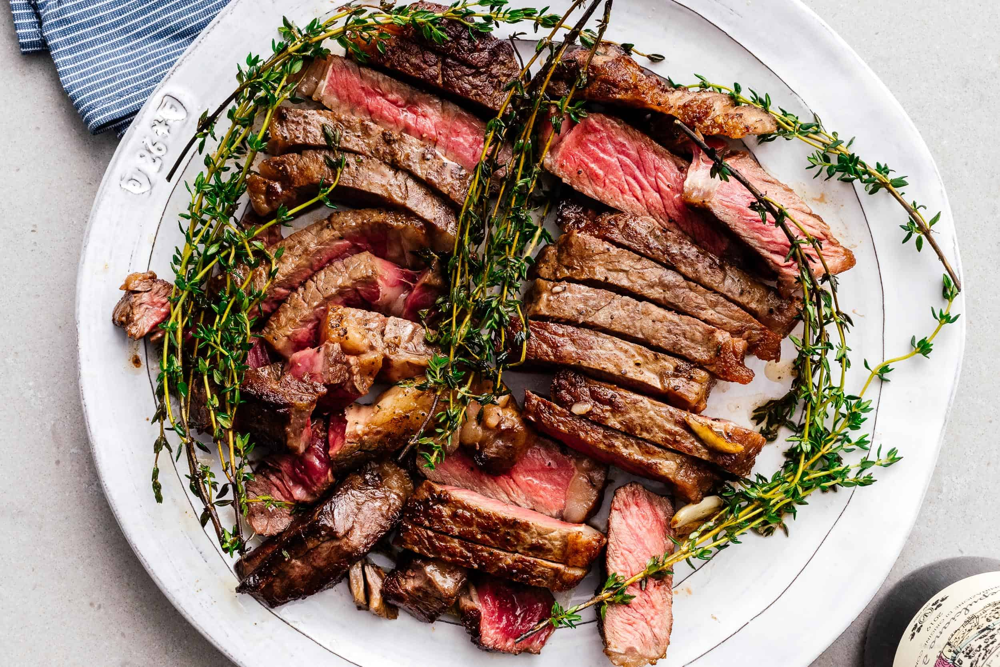

Growing up, I was never truly a fan of meats that took longer than around 5 seconds to chew. All steaks and any tougher chicken or pork cuts were off the table in terms of my diet.
After having my first perfectly cooked steak, I saw meats in an entrely new light. Theres just so much you can do, yet so little necessary to get the absolute most out of a juicy cut of steak. This recipe will take advantate of the cut you have and be sure to leave your family speechless.